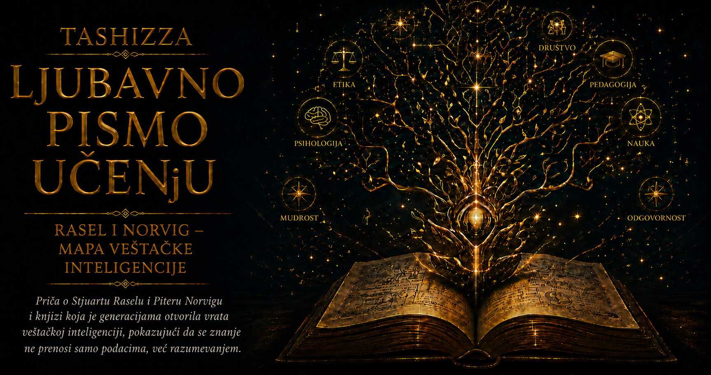

Ljubavno pismo učenju

Veštačka inteligencija dugo je podsećala na nepreglednu zemlju čiji su istraživači govorili različitim stručnim jezicima i crtali karte prema predelu koji su najbolje poznavali. U jednom njenom delu nastajali su programi sposobni da slede pravila logičkog zaključivanja i dokazuju matematičke tvrdnje, u drugom su algoritmi pretraživali ogroman broj mogućih poteza u igrama, dok su se u zasebnim laboratorijama razvijali ekspertni sistemi, računarski vid, razumevanje jezika, planiranje, robotika i različiti oblici mašinskog učenja. Svaki pravac donosio je dragocene rezultate, ali je zajednički pogled na oblast često izmicao, kao da se proučava mnoštvo susednih sposobnosti bez dovoljno jasnog odgovora na pitanje šta ih povezuje.
Rascep je poticao iz same širine pojma inteligencije. Čovek opaža okolinu, pamti prethodna iskustva, zamišlja ono što još ne postoji, zaključuje na osnovu nepotpunih podataka, menja plan kada se okolnosti promene i uči iz posledica svojih odluka. Kada su istraživači pokušali da pojedine delove tog složenog sklopa prenesu mašinama, prirodno su birali probleme koje su mogli precizno da opišu i matematički obrade. Tako su nastale škole okupljene oko predstavljanja znanja, pretrage, verovatnoće, učenja, percepcije i delovanja, pri čemu je svaka razvijala sopstvena merila uspeha i sopstvenu predstavu o tome kakvo ponašanje zaslužuje da bude nazvano inteligentnim.
Jedni su se pitali kako napraviti sistem koji misli poput čoveka, oslanjajući se na saznanja psihologije i kognitivnih nauka. Drugi su pokušavali da postignu ponašanje koje spolja deluje ljudski, dok su pristupi zasnovani na logici tragali za pravilnim zaključivanjem prema formalnim zakonima mišljenja. Četvrti pravac usmerio se na delovanje koje pouzdano vodi ka izabranom cilju. Razlike među tim pogledima određivale su način postavljanja eksperimenata, izbor problema i tumačenje rezultata. Sistem je mogao besprekorno da sledi logička pravila, a da ostane nemoćan u promenljivom svetu u kojem informacije nedostaju, vreme za odlučivanje je ograničeno, a posledice postupaka ne mogu potpuno da se predvide.
Stjuart Rasel i Piter Norvig ponudili su okvir koji je omogućio da se ta razuđena teritorija sagleda kao povezana celina. U središte su postavili inteligentnog agenta: sistem koji opaža svoje okruženje i preduzima radnje koje utiču na njega. Agent u ovom značenju može biti program za igranje šaha, robotska ruka, sistem za medicinsku podršku, vozilo koje reaguje na stanje puta ili softver koji raspoređuje isporuke. Njegova suštinska osobina nalazi se u kružnom odnosu sa svetom: prima podatke, tumači ih u svetlosti raspoloživog znanja i ciljeva, bira postupak, a zatim se suočava sa posledicama sopstvenog delovanja.
Ovaj okvir povezao je tehnike koje su ranije izgledale kao udaljene grane iste nauke. Pretraga omogućava agentu da ispita različite puteve do cilja, logika da iz poznatih činjenica izvede nove zaključke, a teorija verovatnoće da procenjuje mogućnosti kada su podaci nepotpuni ili nepouzdani. Planiranje povezuje pojedinačne radnje u smislen sled, dok mašinsko učenje menja ponašanje sistema na osnovu iskustva. Računarski vid, obrada govora i razumevanje jezika proširuju ono što agent može da opazi, a robotika njegove odluke prevodi u fizičko delovanje. Različite metode tako su dobile mesto unutar zajedničkog procesa opažanja, zaključivanja, izbora i povratne sprege.
Posebno značajan postao je pojam racionalnog agenta, čija racionalnost ne podrazumeva sveznanje, nepogrešivost niti sposobnost da u svakoj situaciji pronađe savršeno rešenje. Racionalan agent bira radnju za koju, na osnovu dostupnih opažanja, prethodnog znanja i očekivanih posledica, ima najviše razloga da veruje da će doprineti zadatom merilu uspeha. Autonomno vozilo koje se približava raskrsnici po kiši mora da poveže podatke o brzini drugih vozila, rastojanju do pešaka, stanju kolovoza i pouzdanosti senzora, a zatim da odluči pre nego što dobije potpunu sliku. Njegovo postupanje određuju dokazi kojima raspolaže, cena moguće greške i rizik koji prati svaku raspoloživu mogućnost.
Mapa inteligentnih agenata promenila je i način na koji se projektuju sistemi. Neodređeni zahtev da mašina bude pametna ustupio je mesto preciznijim pitanjima: u kakvom okruženju sistem deluje, koje podatke može da primi, koje postupke sme da preduzme, kakve posledice ti postupci proizvode i prema čijim se merilima ocenjuje uspeh. Okruženje može biti potpuno ili delimično opažljivo, stabilno ili promenljivo, predvidivo ili prožeto slučajnošću, dok se u njemu mogu nalaziti drugi agenti koji sarađuju, pregovaraju ili pokušavaju da ostvare suprotne ciljeve. Takvo razvrstavanje omogućava da se metode biraju prema prirodi problema i da se ograničenja sistema uoče pre nego što njihove posledice postanu vidljive u stvarnom svetu.
Snaga ovog pristupa pokazala se i u načinu na koji uređuje učenje. Student koji poznaje veliki broj algoritama još nema pouzdano merilo za izbor odgovarajućeg postupka. Dublje razumevanje nastaje kada prepozna vrstu okruženja, prirodu cilja, raspoloživost podataka, cenu greške i odnos između kratkoročnog ishoda i dugoročnih posledica. Algoritmi tada prestaju da budu zbir recepata i postaju sredstva mišljenja. Raselova i Norvigova mapa istovremeno opisuje naučnu oblast i pokazuje kako se složeno znanje može usvajati: najpre kroz odnose među pitanjima, zatim kroz metode koje na ta pitanja odgovaraju, a naposletku kroz probleme u kojima se njihova vrednost može proveriti.
Razvoj dubokog učenja i savremenih jezičkih modela nije uklonio potrebu za tom mapom. Sistemi mogu sa zadivljujućom uspešnošću da prepoznaju slike, stvaraju tekst, predviđaju obrasce i koriste različite digitalne alate, ali se pri njihovom uključivanju u stvarni svet ponovo javljaju pitanja koja je okvir agenata učinio vidljivim. Potrebno je znati koji cilj sistem prati, kako procenjuje posledice, šta čini kada naiđe na okolnosti udaljene od podataka na kojima je učio, koliko samostalnosti sme da dobije i u kojem trenutku odluku mora da prepusti čoveku. Sposobnost jedne komponente dobija pravo značenje tek kada se sagleda ponašanje celine kojoj pripada.
U središtu mape nalazi se i pitanje koje je postajalo sve ozbiljnije kako su sistemi sticali veću moć delovanja: ko određuje merilo uspeha? Algoritam može izuzetno efikasno da optimizuje zadati cilj, dok posledice te optimizacije istovremeno ugrožavaju vrednosti koje nisu unesene u njegovu matematičku formulaciju. Sistem preporučivanja može povećavati vreme provedeno na platformi podsticanjem sadržaja koji izaziva bes, strah ili zavisnost, a model za raspodelu prilika može nastaviti nejednakosti skrivene u istorijskim podacima. Preciznost računanja ne pruža odgovor na pitanje da li je ono što se računa pravedno, korisno i saglasno sa ljudskim dostojanstvom.
Zbog toga se pojam racionalnosti proširio izvan efikasnog pronalaženja puta do unapred određenog cilja. Ljudske namere često su složene, promenljive i nedovoljno jasno izražene, pa ih jedna brojčana mera teško može verno obuhvatiti. Medicinski sistem treba da bude tačan, oprezan, pravedan, razumljiv i sposoban da prepozna granice sopstvenog znanja, dok pomoćni program mora da bude koristan bez narušavanja privatnosti i preduzimanja nepovratnih radnji mimo stvarne saglasnosti korisnika. Inteligentno ponašanje zato uključuje spremnost sistema da traži dodatne informacije, prihvati ispravku i sačuva prostor za ljudsku kontrolu.
Mapiranje univerzuma veštačke inteligencije donelo je trajnu intelektualnu vrednost upravo zato što nije zatvorilo oblast u konačnu definiciju. Dobra mapa pokazuje uređene puteve, ali istovremeno otkriva praznine, raskršća i neistražene predele. Kada agent ne može da izračuna najbolju radnju, otvara se pitanje ograničene racionalnosti; kada cilj nije dovoljno poznat, nastaje problem usklađivanja; kada sistemi menjaju ponašanje ljudi od kojih prikupljaju podatke, pojavljuje se složena povratna sprega između algoritma i društva. Svako ograničenje postaje novo istraživačko pitanje, a svako pitanje proširuje razumevanje inteligencije.
Najdublji doprinos Rasela i Norviga nalazi se u jeziku koji omogućava da se logika i učenje, percepcija i delovanje, teorija i inženjerstvo, sposobnost i odgovornost posmatraju kao delovi iste celine. Inteligencija se može proučavati kroz konkretne odnose: šta sistem opaža, kako predstavlja znanje i neizvesnost, koje mogućnosti razmatra, šta uči iz iskustva, čije ciljeve sledi i na koji način svojim delovanjem menja svet. Takva mapa ne obećava poslednju reč o inteligenciji. Ona pruža nešto dragocenije za svaku živu nauku: dovoljno čvrstu strukturu da se znanje poveže i dovoljno otvoren prostor da buduća otkrića promene granice onoga što smo verovali da razumemo.